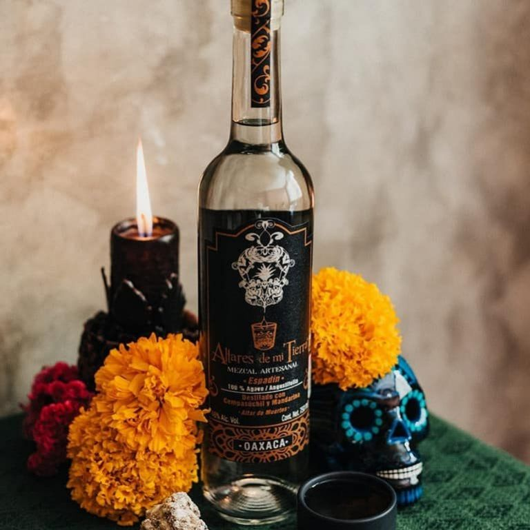

Ofrendas
En el Día de Muertos, ofrendar es la manera de compartir
con los difuntos el pan, la sal, las frutas, los manjares
culinarios, el agua y, si son adultos, el vino, pues simboliza
estar cerca de nuestros muertos para dialogar con su recuerdo, con su vida.
Asimismo, es considerada una mezcla cultural donde los europeos
pusieron algunas flores, ceras, velas y veladoras; los indígenas
le agregaron el sahumerio con su copal y la comida y la flor de
cempasúchil (Zempoalxóchitl).
La ofrenda, tal y como la conocemos en la actualidad, es también un
reflejo del sincretismo del viejo y el nuevo mundo, por lo que debe
tener varios elementos esenciales. Si faltara uno de ellos, se pierde,
aunque no del todo el encanto espiritual que rodea a este patrimonio
religioso de México.

Originalmente, los altares se ponían un par de días antes del 1 y 2
de noviembre, es decir, el 30 o 31 de octubre y permanecían hasta el 3.
Ahora, es muy común que, debido al esfuerzo creativo que se invierte en
colocarlas, se pongan antes y se quiten después. Aunque los 1 y 2 de noviembre
no han dejado de ser los días principales. De acuerdo con la tradición, en esas
dos fechas nos visitan todas las almas que se desprendieron de sus cuerpos,
es decir, nuestros difuntos.
Elementos de las Ofrendas
Fotografías de los difuntos
Sugiere el ánima que nos visitará, |
Incienso o copalEl humo que desprende el copal |
Velas y Veladoras
Los antiguos mexicanos utilizaban |
Pan de muerto
El ofrecimiento fraternal es el pan. |
Agua
La fuente de la vida, se ofrece |
Sal
la sal es un elemento de purificación, |
FloresSon símbolo de la festividad por |
PetateEntre los múltiples usos del petate |
Calaveras de azúcar
Medianas son alusión a la muerte |
LicorEs para que recuerde los grandes |
Mole
con pollo, gallina o guajolote, es |
Gollete Y Cañas
Se relacionan con el tzompantli. |
Papel PicadoDesde la época prehispánica, en las |
 |
|